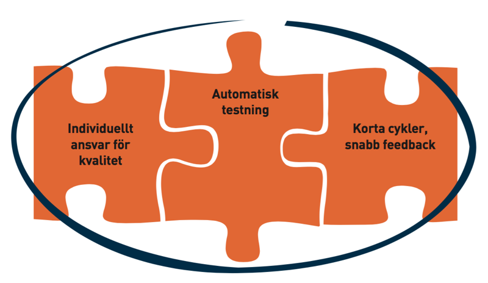
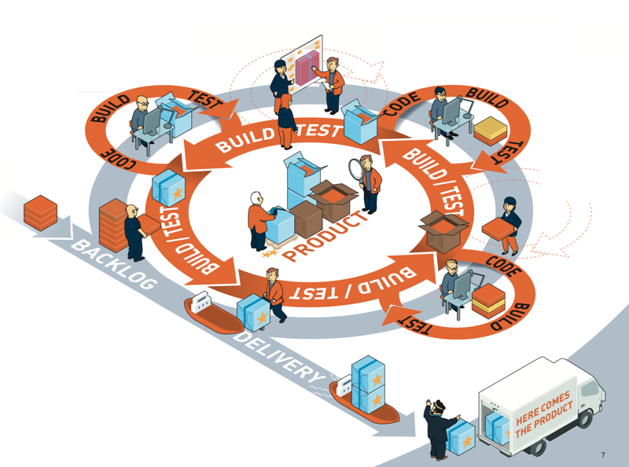
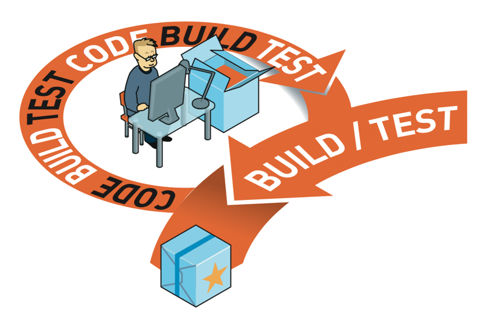

Continuous Delivery på 5 minuter
EN VANLIG DAG PÅ JOBBET ...
Behöver din organisation strama upp kvaliteten och leveranssäkerheten – och få nöjdare kunder på köpet?
Då rekommenderar vi en närmare titt på Continuous Delivery – metodiken där
- stressnivån sjunker och utrymmet för kreativitet ökar
- det går snabbt att anpassa sig till ändrade förutsättningar och kund- önskemål
- dina utvecklare slipper gräva fram gamla problem som borde varit lösta för länge sen
- din organisation kan ge leveranslöften som kunden kan lita på • du tidigt kan ge kunden något att prova och ge återkoppling på
- du alltid vet vad koden har för status: klar för leverans!
- teamet får snabbt bekräftat efter varje ändring av koden att allting fungerar
- du tidigt kan ge kunden något att prova och ge återkoppling på
Inte minst är Continuous Delivery en metodik som låter utvecklarna fokusera på att skriva bra kod; de vet ju att det som de levererar faktiskt fungerar tillsammans med andra delar av mjukvaran.
VAD INNEBÄR CONTINUOUS DELIVERY?
Continuous Delivery, CD, är en metod som gör att mjukvaruorganisationer kan leverera nya versioner eller uppdateringar snabbt och löpande utan att drabbas av interna förseningar eller kvalitetsproblem.
Metoden är till för team som samarbetar kring en gemensam mjukvaru- produkt eller -tjänst. Den bygger på ett arbets öde där varje utvecklare tar stort individuellt ansvar för kvaliteten på koden. Automatiska tester utförs omedelbart efter varje ändring eller komplettering av koden. Arbetet präglas av korta cykler och snabb återkoppling. Det gör att mjukvaran ständigt är testad och klar för skeppning. Därför behöver inte ny funktionalitet, förbättringar och bugg xar paketeras i stora uppdateringar utan kan levereras så fort de är klara. Mottagaren eller kunden kan vara ett team inom samma organisation eller en affärspartner (som inte är slutanvändare av mjukvaran).
Ständigt levererbar mjukvara

Notera att den slutliga produktionssättningen inte ingår i begreppet CD. När vi gör paketerad och levererad mjukvara kontinuerligt tillgänglig för slutanvändaren kallas det Continous Deployment
PRINCIPERNA FÖR CONTINUOUS DELIVERY
Continuous Delivery innebär att den kod som produceras hela tiden och på alla nivåer befnner sig under kvalitetskontroll, främst genom automatisk testning. Koden ska så fort som möjligt testas i sin kontext och paketeras för att bli redo för leverans.
Individuellt ansvar för kvalitet
Huvudloopen i CD är den individuella utvecklarens arbete med kodändringar som byggs och testas innan de integreras med teamets övriga kodändringar. Arbetet bygger på tillit och laganda: varje utvecklare måste utföra sin del av arbetet på ett förutsägbart och noggrant sätt, utan att ta genvägar eller göra ”fulhack” (läs gärna Clean Code på fem minuter).
Automatisk kvalitetssäkring
För att kvalitetssäkringen ska yta måste den automatiseras så mycket det går även om kodgranskning fortfarande har sin plats. Det för också det goda med sig att utvecklarna tillbringar minimalt med tid på kvalitets- kontrollen av varje leverans. En ytterligare fördel är att automatiseringen minskar risken för fel. När man tillämpar CD ska det alltid gå undan; till exempel bör testningen av nya kodändringar vara klara inom en timme.
Korta cykler med snabb och kontinuerlig feedback
Här följer CD de sedvanliga principerna för Agile. CD handlar om att få ett komplext samarbete att yta utan väntetider eller fel – som kugghjulen i ett väloljat maskineri.
Genom att kontinuerligt lägga till små ändringar som testas får teamen god insikt om hur långt de har kommit och tar därigenom en liten risk vid varje tillägg. Produkten kommer med stor sannolikhet att kunna sättas i produktion strax efter det att de senaste tilläggen gjorts i koden.
CONTINOUS DELIVERY I PRAKTIKEN
Continuous Delivery handlar om att bli duktig på att hantera kod, byggen, test och leveranser effektivt. Resultatet blir ett välsmort maskineri där man utvecklar produkten inkrementellt med tillägg och rättningar i små steg. Produkten är hela tiden redo att levereras.

I en väl fungerande CD-organisation snurrar leveranshjulet (= den gråa cirkeln) hela tiden i hög hastighet. Notera hur de fyra disciplinerna – kod, byggen, test och leveranser – går igen på varje nivå. Man skulle nästan kunna säga att CD har en fraktal struktur!
Den kod som har integrerats och hur testerna har utfallit visualiseras tydligt. Alla kan enkelt se vilka tillägg som gjorts från backloggarna varje dag och hur testresultatet ser ut – dels för de nya funktionerna, dels för de sedan tidigare existerande funktionerna.
Minst en gång om da- gen är organisationen redo att skeppa en ny produktversion till kunden.
En fungerande CD-organisation bygger på att både individer och team behärskar fyra så kallade discipliner:
kod - (code) verktyg och processer för att lägga till ny kod samt hantera versioner.
byggen – (build) verktyg och processer för att bygga koden i en produkt.
test – (test) verktyg och processer för att hantera testkod tillsammans med
kod för produkten samt automatisk test av produkten.
leveranser - (delivery) förmågan att paketera mjukvaran och göra den tillgänglig för kunden.
När organisationen har uppnått hög mognad inom disciplinerna uppkommer det sällan några negativa
överraskningar vid integration och leverans.
UTVECKLAREN STÅR I CENTRUM I CONTINUOUS DELIVERY

CD-konceptets minsta beståndsdel är den enskilde utvecklaren som behärskar de fyra disciplinerna.
I Continuous Delivery eftersträvar man att utvecklaren har så effektiva verktyg och processer som möjligt för hantering av de tre disciplinerna kod, bygge och test. Möjligheten att få värdefull återkoppling gör att ut- vecklaren sporras till att jobba i snabba cykler och därigenom tillämpa den fjärde disciplinen: att leverera kodändringar så fort de är klara.
Genom att alla jobbar på samma sätt nns de senaste kodversionerna från övriga utvecklare tillgängliga hela tiden – testade och klara. Väntetiderna mellan olika delar av organisationen blir därigenom så korta som de någonsin kan bli. Via tydlig visualisering förstår alla i organisationen vad som är färdigt och hur bra de olika delarna av koden fungerar – enskilt och integrerat.
En tumregel för CD säger att en enskild leverans av kod inte ska behöva ta mer än en timme. Bygge och automatiska tester kommer snabbt att ge återkoppling om leveransen inte fungerar som det är tänkt.
De fyra disciplinerna
Kod: Verktyg och processer för att lägga till ny kod samt hantera nya och gamla versioner av kod som utvecklas och levereras. I samband med tillägg av ny kod triggas kodgranskningar, byggen och automatiska tester för direkt återkoppling till utvecklaren innan ändringen slutligt läggs till produkten. Här görs det synligt för alla inblandade vilka saker som lagts till i produk- ten. Dokumentation görs av tilläggen automatiskt.
Byggen: Verktyg och processer för att robust och effektivt bygga koden i en produkt så att resultatet blir identiskt för alla inblandade. Skapar även möjlighet att återskapa gamla versioner av produkten.
Test: Verktyg och processer för hantering av testkod tillsammans med kod för produkten samt automatisk test av produkten. Från automatisk test kom- mer kontinuerligt visibiliteten på hur nya och gamla funktioner i produkten fungerar. Även den enskilde utvecklaren får visibilitet på hur varje enskilt tillägg fungerar innan det slutligt läggs till.
Leveranser: Förmågan att paketera mjukvaran och göra den tillgänglig för kunden. I många fall är det lämpligt att beskriva kon guration och uppsättning av produktionsmiljön som kod tillsammans med produkten och testerna.
KOMMA IGÅNG MED CONTINUOUS DELIVERY – 1
Metodiken bakom Continuous Delivery kan knappast implementeras över en natt. Istället rör det sig om ett mognadsarbete där organisationen går från nybörjare till mogen mästare. Det centrala verktyget är en så kallad mognadsmodell.
1
Analysera de affärsmässiga förutsättningarna.
En välfungerande organisation för CD bygger på en djup förståelse för marknadens
och kundens behov och de affärsmöjligheter som metodiken skapar. På denna baseras
alla de beslut och prioriteringar som sedan görs.
2
Introducera en mognadsmodell och utvärdera organisationens förutsätt- ningar och mognad.
En mognadsmodell är ett verktyg som både översiktligt och i detalj visar hur långt organisationen har
kommit när det gäller infrastruktur och arbetsmetodik. Den ligger till grund för en utvärdering
(assessment) av de fyra olika disciplinerna (kod, bygge, test, leverans) inför införandet av CD.
Även efter det att man tagit de första stegen utgör mognadsmodellen ett centralt verktyg (se punkt 4 nedan);
man kan se den som ett slags backlog för att förbättra respektive införa nya metoder och processer.
 Efter analys, utvärdering och planering är det bara att kavla upp ärmarna och börja röra sig
genom mognadsmodellen från vänster till höger. I bilden ser vi två organisationer – den röda och
den gröna – som arbetar sig genom mognadsmod- ellen. Att gå från ”Novice” till ”Mature” kan ta
månader,till och med år. Notera att en organisation kan ha hunnit olika långt i de olika disciplinerna.
Efter analys, utvärdering och planering är det bara att kavla upp ärmarna och börja röra sig
genom mognadsmodellen från vänster till höger. I bilden ser vi två organisationer – den röda och
den gröna – som arbetar sig genom mognadsmod- ellen. Att gå från ”Novice” till ”Mature” kan ta
månader,till och med år. Notera att en organisation kan ha hunnit olika långt i de olika disciplinerna.
3
Gör en plan för förbättringarna
Baserat på den affärsmässiga analysen och insikterna från steg 2 upprät- tas en plan. Vilka
åtgärder nns det behov av? I vilken ordning är förän- dringarna lämpliga att genomföra? Var
kan vi snabbt få effekt av några åtgärder? När kan vi börja dra riktig nytta av fördelarna av CD?
4
Genomför förbättringarna enligt planen
Genomför förbättringarna steg för steg enligt planen och utvärdera kontinuerligt att det går i rätt
riktning. Planen innefattar troligen både invest- eringar i verktyg, utbildning och processer inom
de olika disciplinerna för hantering av kod, bygge, test och leverans.
Detta arbete innefattar bland annat att anpassa och komplettera infrastrukturen. Först och främst gäller det att få ordning på källkodshanter- ingen, inte minst versionshanteringen. Den stora utmaningen är sedan att automatisera byggen och kvalitetskontroll. Det är också viktigt att man visualiserar alla processer och leveranser. Slutligen måste man skapa en mogen och automatiserad leveransprocess.
5
Trimma processerna och inför nya tankesätt
När infrastrukturen börjar komma på plats är det dags att trimma in processerna och röra sig åt
höger i mognadsmodellen. Det innebär också att man inför nya tankesätt:
Metodtänkandet ska ta fasta på princip 1 i Agile Manifesto: ”Our highest priority is to satisfy the customer through early and continuous delivery of valuable software”. Det innebär bland annat att varje avslutad uppgift ska ge ett levererbart resultat som kan ligga till grund för snabb återkoppling i en simulerad eller verklig produktionsmiljö.
Kommunikationen måste intensifieras på alla plan, både inom utvecklings teamet och mellan kund och utvecklingsteam. Om kunden så önskar ska den kunna följa hur saker och ting fortskrider dag för dag – total transparens är målet. Utvecklarna, å andra sidan, kan behöva få mer kunskap om hur, var och av vem mjukvaran ska användas.
Effektivt ledarskap i en CD-miljö handlar mycket om att stärka tilliten inom utvecklingsteamet – alla ska veta att de gör rätt saker på rätt sätt och att ett altruistiskt beteende lönar sig. Ledningen måste också utveckla en ny djärvhet när det gäller att utnyttja den transparens, tempoökning och leveranssäkerhet som CD skapar.
Agile manifesto
“WE FOLLOW THESE PRINCIPLES: OUR HIGHEST PRIORITY IS TO SATIS- FY THE CUSTOMER THROUGH EARLY AND CONTINUOUS DELIVERY OF VALUABLE SOFTWARE ...”
ETT ANNAT SÄTT ATT FÖRKLARA CONTINUOUS DELIVERY
Batch Automobiles och Continuous Cars är två racingstall som tävlar i formelbilsserien Formel Agile. Konkurrensen är knivskarp, och för varje internationellt race måste de tekniska underverk som bilarna utgör modifieras och uppdateras. Batch Automobiles har länge dominerat, men nu står man chanslös mot uppstickaren Continuous Cars. Hur hinner dessa nya stjärnor få sina bilar perfekt anpassade för varje race?
Låt oss se vad som pågår bakom de stängda verkstadsdörrarna hos de båda racingstallen.
[A] Hos Batch Automobiles går mekanikerteamet till botten med hela konstruktionen vid varje uppdatering.
De plockar isär bilen och jobbar med sina respektive delar. När alla är klara med sitt arbete plockar
de ihop en fungerande bil igen. Dessvärre brukar oväntade problem uppstå när de sätter ihop bilen eftersom
de olika delarna inte har testats tillsam- mans. När arbetet pågår vet tävlingsförararna för Batch Automobiles
att de ofta måste vänta i era dagar mellan tillfällena då de får chansen att provköra bilen och ge återkoppling.

[B] Hos Continuous Cars plockar man bara ut de delar som man behöver utföra ändringar på. Så fort en mekaniker
gjort en ändring stoppar han eller hon tillbaks den och testar så att den fungerar tillsammans med bilen i
övrigt. Närhelst mekanikerna tar en paus i arbetet kan tävlingsförarna sätta sig i bilen, köra en kvick runda
och ge återkoppling.